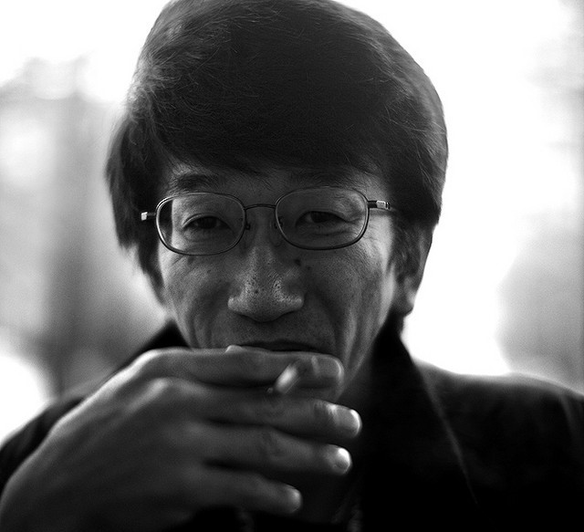

Nossos Instagrans: Endereço de nossa oficina:

Quem foi Nagata?

Kazuhiko “Smokey” Nagata é o fundador da Top Scret,
uma empresa japonesa que vende peças e modifica carros.
A empresa conhecida pelos seus body-kits de performance.
Smokey trabalhou por muito tempo em uma concessionária Toyota,
em diante, surge sua paixão peplo controle de sua velocidade.
Sua oficina: Top Secret, possui este pelo seu trabalho sempre silencioso com seus carros.
Seu primeiro carro de tunning: Toyota supra.